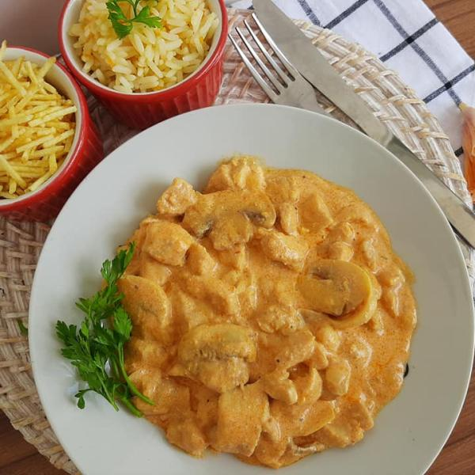

Strogonoff
/>
INGREDIENTES
500g de carne em tiras finas
1 pitada de pimenta-do-reino
3 colheres (sopa) de manteiga
meia cebola picada
1 tablete de MAGGI® caldo de carne
4 colheres (sopa) de água fervente
meia xícara (chá) de comhaque
200g de champignonse em conserva fatiados
3 colheres (sopa) de purê de tomate
1 colher (sopa) de mostarda
2 colheres (sopa) de ketchup
1 lata de NESTLÉ® creme de leite
MODO DE PREPARO
1. Em um recipiente, misture a carne com a pimenta-do-reino.
2. Em uma frigideira grande, derreta 2 colheres (sopa) da manteiga e doure a carne, aos poucos, em fogo alto.
3. Retire a carne e coloque a manteiga restante.
4. Refogue a cebola, junte a carne, acrescente o MAGGI Caldo e a água fervente e mexa bem até dissolver.
5. Despeje o conhaque, espere aquecer e incline levemente a frigideira para flambar o conhaque.
6. Aguarde acabar a chama. Junte os champignons, tampe a frigideira e deixe por alguns minutos.
7. Acrescente o purê de tomate, a mostarda e o ketchup, misture bem.
8. Abaixe o fogo, deixe por cerca de 5 minutos, com a frigideira tampada.
9. Incorpore delicadamente o NESTLÉ Creme de Leite e retire do fogo antes de ferver. Sirva.